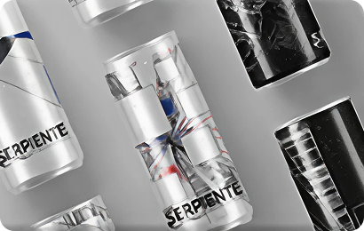
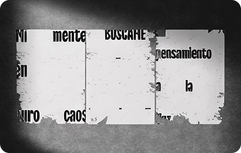
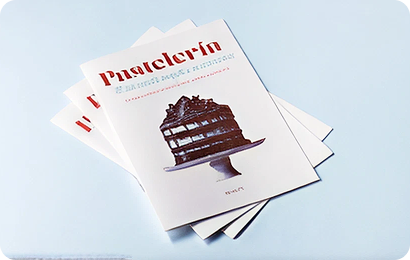
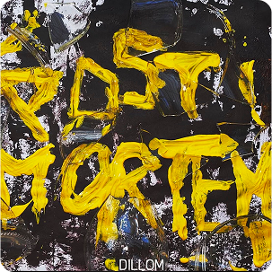
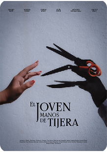
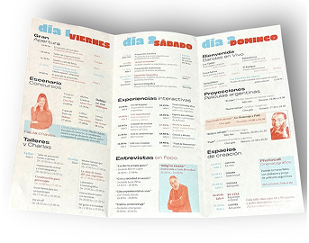

Proyecto 1 — serpiente

Diseño conceptual de packaging inspirado en una canción de Airbag, combinando música, color y narrativa visual.

Diseño conceptual de packaging inspirado en una canción de Airbag, combinando música, color y narrativa visual.

Proyecto conceptual de museo inspirado en los pensamientos intrusivos y su representación dentro de un espacio visual e inmersivo.

Proyecto editorial inspirado en el universo de la pastelería, combinando diseño visual, fotografía y una estética delicada y moderna.

La realización de esta portada para el disco Post Mortem de Dillom, estética oscura e intensa acompañando el universo visual y conceptual del álbum.

Recreación del afiche cinematográfico buscando mantener la esencia visual y emocional del original, a través de una estética gótica, tonos fríos y composición dramática.

Cronograma para un evento de cine con el objetivo de presentar de manera clara y dinámica la programación de actividades, horarios y proyecciones.